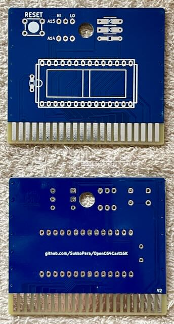
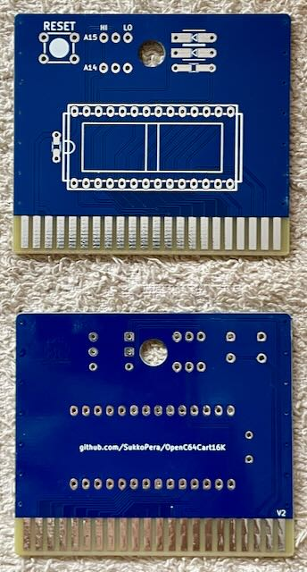
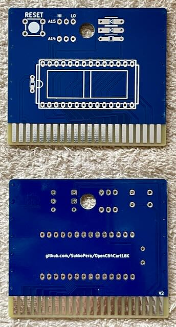

Projekt-Homepage • Interakiver Bestückungsplan

Ein 16k ROM Modul für den C64.
| Komponente | Anzahl | Preis | Anbieter |
| Platine | 1 | €1.00 | |
| 100nF Kondensator | 1 | €0.03 | Reichelt |
| 1kΩ Widerstand | 1 | €0.04 | Reichelt |
| 1N4148 Diode | 2 | €0.02 | Reichelt |
| 1x3 Stiftleiste | 2 | €0.05 | Reichelt |
| Jumper | 2 | €0.03 | Reichelt |
| 6x6x5mm Taster | 1 | €0.35 | Reichelt |
| 28-Pin Sockel, breit | 1 | €0.50 | Reichelt |
| 27512 EPROM | 1 | €2.56 | AliExpress • eBay |
| nur Platine | €1.00 | ||
| Bausatz | €4.58 |